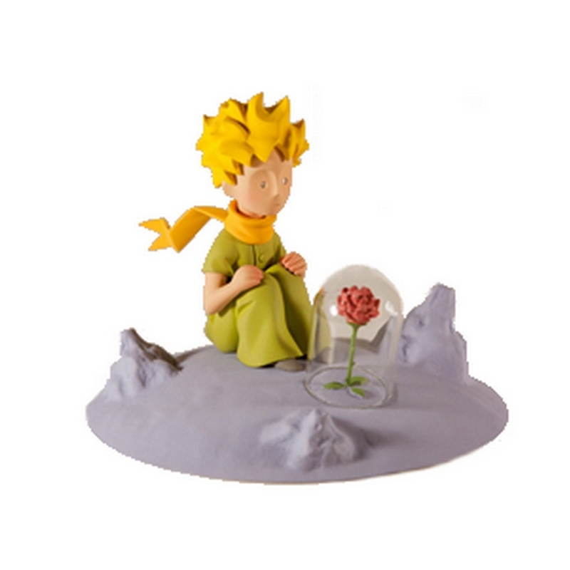
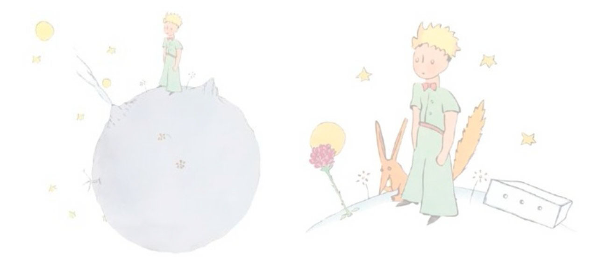

1. (Posicionamiento estático):
Cuando yo tenía seis años vi en el libro sobre la selva virgen:
Historias vividas, una grandiosa estampa. Representaba una serpiente boa comiéndose a una
fiera. He aquí la copia del dibujo.
2. (Posicionamiento relativo):
En el libro se afirmaba: “La serpiente boa se traga su presa entera,
sin masticarla. Luego, como no puede moverse, duerme durante los seis meses que dura su
digestión”.
3. (Posicionamiento fijo):
Reflexioné mucho en ese momento sobre las aventuras de la jungla y logré
trazar con lápices de colores mi primer dibujo. Mi dibujo número 1 era de esta manera:
4. (Posicionamiento absoluto):
Enseñé mi obra de arte a las personas mayores y les pregunté si mi
dibujo les daba miedo.
–¿Por qué habría de asustarme un sombrero? –me respondieron.
5. (Posicionamiento sticky):
Soy un adhesivo
6. (Elementos superpuestos):

Al contemplar sus labios entreabiertos en los que se esbozaba una sonrisa, me dije aún:
"Lo que más me emociona de este principito es su fidelidad a una flor. Es la imagen de la
rosa que resplandece en él como la llama de una lámpara, incluso cuando duerme..."
Y lo sentí más frágil aún. Pensé que a las lámparas hay que protegerlas: un viento fuerte
puede apagarlas...
7. (Posicionamiento del texto sobre una imagen):

NETFLIX
Inicio
Todas las peliculas y series
que desees, y mucho más.